| 1.-3. | 4.-5. 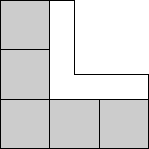 | 6. 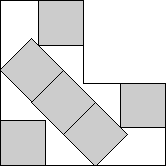 | ||
| s = 2 Trivial. | s = 3 Trivial. | s = (5√2 + 4) / 3 = 3.690+ Found by David W. Cantrell in June 2005. |
| 7. 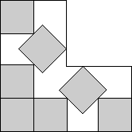 | 8.-12. 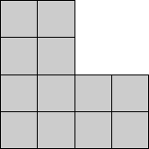 | 13. 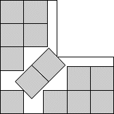 | ||
| s = √2 + 5/2 = 3.914+ Found by Erich Friedman in June 2005. | s = 4 Trivial. | s = 2 + 2√2 = 4.828+ Found by Maurizio Morandi in October 2008. |
| 14. 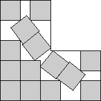 | 15.-16. 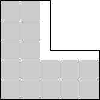 | 17. 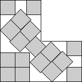 | ||
| s = 4.988+ Found by David W. Cantrell in June 2005. | s = 5 Trivial. | s = 4/3 + 3√2 = 5.575+ Found by Maurizio Morandi in October 2008. |
| 18. 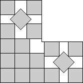 | 19. 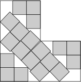 | 20. 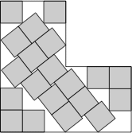 | ||
| s = (2√2 + 14) / 3 = 5.609+ Found by Erich Friedman in June 2005. | s = 5.792+ Found by David W. Cantrell in July 2012. | s = 5.937+ Found by David W. Cantrell in July 2012. |
| 21.-27. 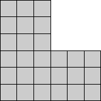 | 28. 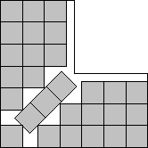 | 29. 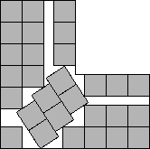 | ||
| s = 6 Trivial. | s = 6 + √2/2 = 6.707+ Found by Maurizio Morandi in September 2015. | s = 6.840+ Found by Maurizio Morandi in September 2015. |
| 30.-33. 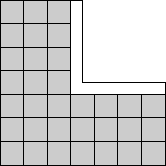 | 34. 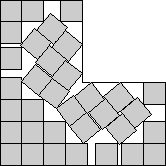 | 35. 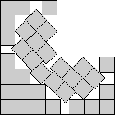 | ||
| s = 7 Trivial. | s = 7.513+ Found by Joe DeVincentis in September 2015. | s = 7.560+ Found by Joe DeVincentis in September 2015. |
| 36. 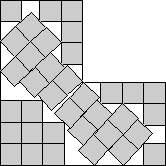 |
| s = 7.730+ Found by Joe DeVincentis in September 2015. |